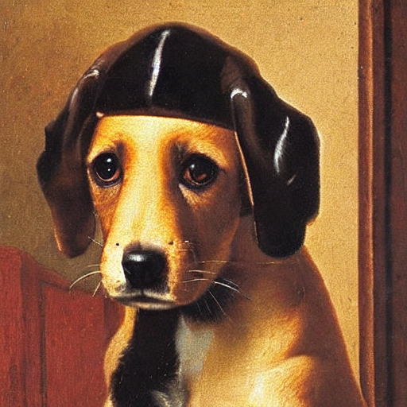
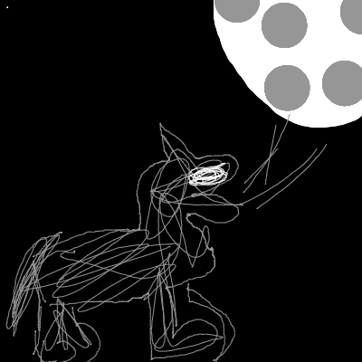

import warnings
warnings.filterwarnings('ignore')
import logging
from pathlib import Path
import matplotlib.pyplot as plt
import torch
from fastcore.all import concat
from huggingface_hub import notebook_login
from PIL import Image
from transformers import CLIPTextModel, CLIPTokenizer
from diffusers import AutoencoderKL, UNet2DConditionModel
from diffusers import LMSDiscreteScheduler
from tqdm.auto import tqdm
logging.disable(logging.WARNING)
torch.manual_seed(1)
if not (Path.home()/'.huggingface'/'token').exists(): notebook_login()Exploring the Secrets of Stable Diffusion

Hi everyone! I’m super excited to share with you my journey into the world of generative AI and diffusion models. These are amazing technologies that can create realistic images from text prompts. You might have seen some examples on twitter or reddit, where people type a word and get an image of it. Well, in this blog / tutorial, I’m going to show you how to do that yourself.
This tutorial has two parts: first, we’ll use huggingface’s pipeline, which is very cool and easy to use. Then, we’ll build our own pipeline from scratch, so we can have more control over the code.
PART ONE
The following cell contains all the necessary libraries to run the code. I have already installed them on my machine, but if you encounter any errors, you can use pip install {library name} to install them. You will also need a Hugging Face account to use the Hugging Face library.
Let’s begin with a simple example of how prompting text works.
As we explained before, the idea is to write some text and then get an image of what we wrote as the output. To use huggingface pipeline, we need to import the stableDiffusionpipeline from the diffusers library and then create an instance of it. Inside the parentheses of the instance, we specify the model we want to use: CompVis/stable-diffusion-v1-4. We also use fp16 to save memory and to("cuda") to run this on the GPU for faster inference.
from diffusers import StableDiffusionPipeline
pipe = StableDiffusionPipeline.from_pretrained("CompVis/stable-diffusion-v1-4", revision="fp16", torch_dtype=torch.float16).to("cuda")Isn’t it amazing how we can create a Vermeer-style puppy image with just a few lines of code? All we need to do is pass the text as a prompt to the pipeline and voila, we have our masterpiece! And the best part is, we can get the same image every time by using torch.manual_seed. This way, we can ensure reproducibility across different devices. You can see how simple and fun it is to use the pipeline for text-to-image generation!
torch.manual_seed(12340)
prompt = "puppy in the style of Vermeer"
pipe(prompt).images[0]This takes us to another cool stuff Classifier free Guidance
Classifier free guidance CFG
Generating new text from scratch is a challenging task, so sometimes the model might produce something that does not match your expectations. That’s why CFG gives you the power to control the inference step and steer the output in the direction you want. Isn’t that amazing?
Negative Prompt
Imagine you have created a cute puppy with our pipeline. But wait, it has a blue top! What if you don’t like blue and want to avoid it in your image? No problem, our pipeline has a solution for that. Just use the negative_prompt argument and specify blue. The model will do its best to remove any blue from your image. Isn’t that amazing?
torch.manual_seed(12340)
pipe(prompt, negative_prompt="blue").images[0]
Image2Image
You might think that the pipeline can only do text-to-image, but it can do much more! One of the amazing features is image2image. This means you can give it an image and ask it to transform it into another image based on your description. For example, you can turn a sketch into a realistic painting, or a photo into a cartoon. Let me show you how to do this.
The code below is not very complicated, but the main idea is that it defines a function that takes a list of images, a number of rows and columns, and returns a grid of these images arranged in the specified way. This is useful for displaying the output images side by side.
def image_grid(imgs, rows, cols):
w,h = imgs[0].size
grid = Image.new('RGB', size=(cols*w, rows*h))
for i, img in enumerate(imgs): grid.paste(img, box=(i%cols*w, i//cols*h))
return gridLet’s now import the Image 2 Image pipeline as follows
from diffusers import StableDiffusionImg2ImgPipelineWe can download an image to use as a starting image.
!curl --output macaw.jpg 'https://s3.amazonaws.com/moonup/production/uploads/1664665907257-noauth.png'
input_image = Image.open("macaw.jpg").convert("RGB")
input_image % Total % Received % Xferd Average Speed Time Time Time Current
Dload Upload Total Spent Left Speed
100 46150 100 46150 0 0 385k 0 --:--:-- --:--:-- --:--:-- 385k
Iam excited to show you how to create amazing art from a simple sketch! Look at this image: it’s just a hand-drawn outline of a scene. But we can use our model to fill in the details and make it look realistic. How? Let’s find out together! Follow these steps to instantiate our model and get ready to generate some awesome art!
pipe = StableDiffusionImg2ImgPipeline.from_pretrained("CompVis/stable-diffusion-v1-4",revision="fp16",torch_dtype=torch.float16,).to("cuda")Wow! Look at the amazing results of our image processing. The images we got are so fascinating and they perfectly match our original image. Isn’t that awesome?
torch.manual_seed(1000)
prompt = "wolf howling at the moon, photorealistic 4K"
images = pipe(prompt=prompt, num_images_per_prompt=3, image=input_image, strength=0.8, num_inference_steps=50).images
image_grid(images, rows=1, cols=3)I’m excited to share with you some of the amazing features of diffusion models. They are not just simple tools, but powerful methods to create realistic and diverse images. You can use some free tips to guide the process and get the results you want. For example, you can try:
- Textual Invation
- Callbacks
These are great ways to practice and master the pipeline.
This is just a glimpse of what diffusion models can do and how they work. If you are curious and eager to learn more, join me in part two.